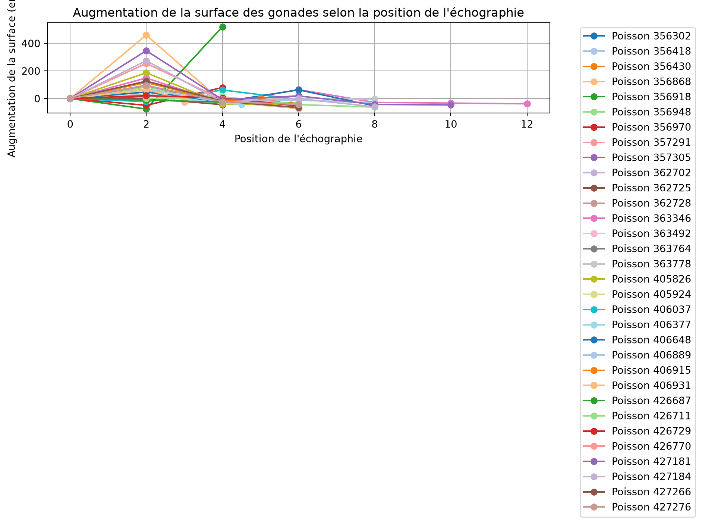
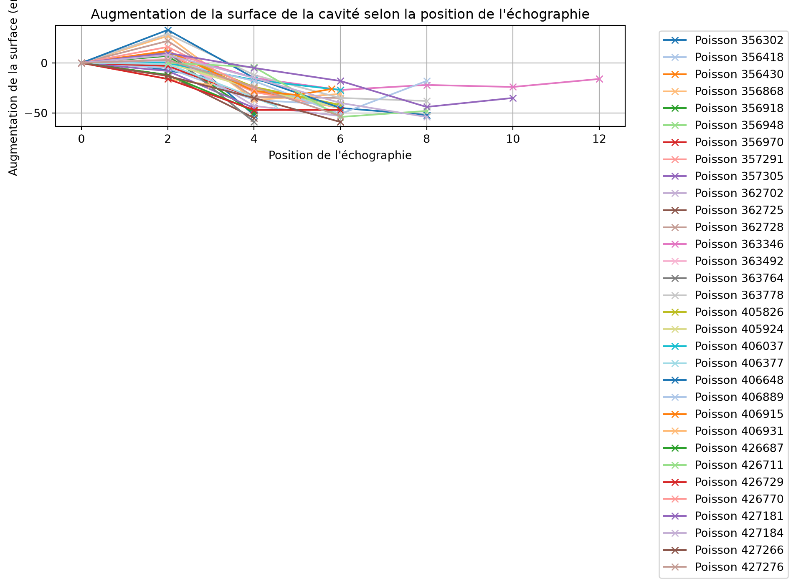
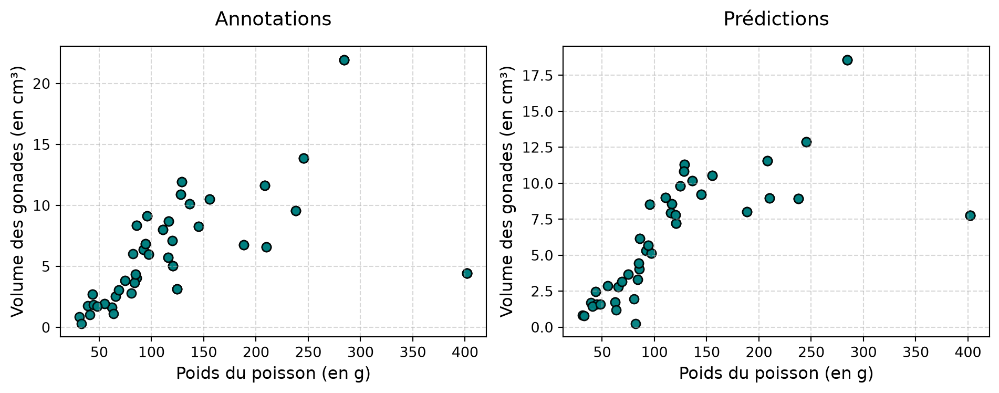
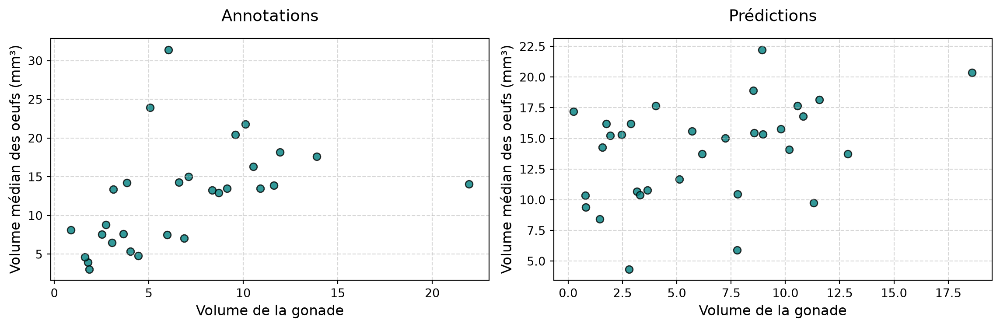
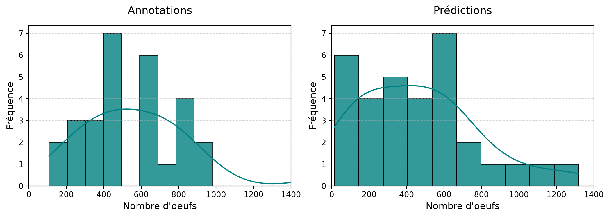
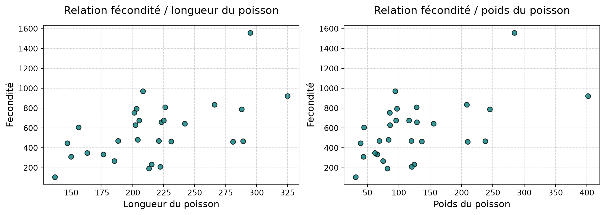
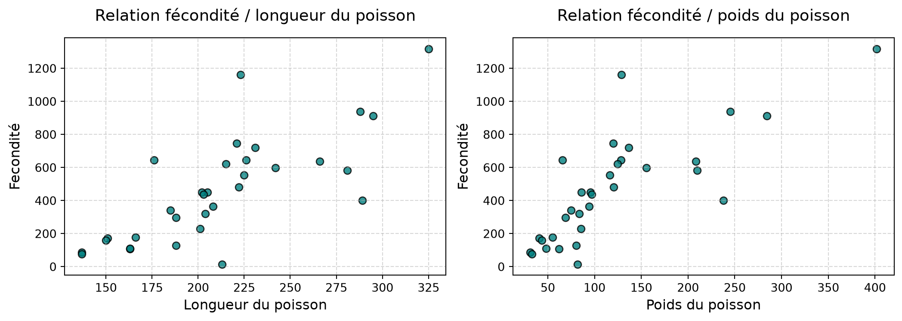

Nombre de poissons : 41
Nombre d'échographies transversales : 145
Nombre d'écho transversales moyennes par poisson : 3.54
Nombre d'échographies longitudinales : 58Résultats sur l’échantillon d’évaluation
Rappels échantillon de validation
Global
Vrai annotations
Nombre d'échographies transversales non vides : 135
Nombre d'échographies longitudinales non vides : 49
Nombre d'oeufs : 330Prédictions
Nombre d'échographies transversales non vides : 144
Nombre d'échographies longitudinales non vides : 54
Nombre d'oeufs : 570Volumes et fécondité par poisson
| id poisson | image_id | echelle | volume_cavite_pred | volume_gonade_pred | volume_cavite_true | volume_gonade_true | poids_poisson | long_poisson | age_poisson | volume_median_oeufs_mm3_true | volume_median_oeufs_mm3_pred | fecondite_pred | fecondite_true | |
|---|---|---|---|---|---|---|---|---|---|---|---|---|---|---|
| 0 | 356302 | 0004575 | 3.1 | 6.755907 | 2.797993 | 6.812223 | 2.530539 | 65.6 | 176 | None | 7.578333 | 4.345598 | 643.868272 | 333.917572 |
| 1 | 356418 | 0004585 | 3.8 | 14.315884 | 8.515455 | 13.881199 | 9.137038 | 95.7 | 205 | 2+ | 13.491831 | 18.892601 | 450.729647 | 677.227451 |
| 2 | 356430 | 0004591 | 3.8 | 19.254379 | 11.311088 | 18.391844 | 11.946569 | 128.9 | 223 | 2+ | 18.163414 | 9.734851 | 1161.916932 | 657.727060 |
| 5 | 356868 | 0004650 | 3.8 | 13.817284 | 6.172900 | 14.179548 | 8.351642 | 85.8 | 202 | 2+ | 13.250699 | 13.731120 | 449.555461 | 630.279324 |
| 6 | 356877 | 0004656 | 3.8 | 3.579831 | 1.704597 | 3.377708 | 1.775032 | 39.1 | 147 | 1+ | 3.963647 | NaN | NaN | 447.828070 |
| 7 | 356918 | 0004663 | 3.8 | 9.595264 | 1.753383 | 9.739387 | 1.622979 | 62.1 | 163 | 1+ | 4.629828 | 16.206889 | 108.187516 | 350.548528 |
| 8 | 356948 | 0004671 | 3.8 | 16.626515 | 8.565974 | 16.718070 | 8.708754 | 116.5 | 225 | 2+ | 12.902081 | 15.435568 | 554.950376 | 674.988295 |
| 9 | 356970 | 0004678 | 3.8 | 8.757734 | 3.174379 | 8.912900 | 3.047417 | 68.7 | 188 | 1+ | 6.465735 | 10.669065 | 297.531123 | 471.317909 |
| 10 | 357291 | 0004723 | 3.8 | 19.191222 | 10.558799 | 18.727223 | 10.526511 | 155.4 | 242 | 3+3 | 16.324145 | 17.647624 | 598.312762 | 644.843016 |
| 11 | 357302 | 0004729 | 3.8 | 2.636223 | 0.815820 | 2.666691 | 0.871347 | 31.2 | 137 | 1+ | 8.127562 | 9.411306 | 86.685119 | 107.208903 |
| 12 | 357305 | 0004733 | 3.8 | 8.789541 | 3.659794 | 8.661337 | 3.839687 | 74.7 | 185 | 1+ | 14.243595 | 10.766834 | 339.913680 | 269.572873 |
| 13 | 362702 | 0004863 | 3.8 | 14.418199 | 7.944593 | 15.291433 | 5.715391 | 115.7 | 210 | 2+ | NaN | NaN | NaN | NaN |
| 14 | 362725 | 0004866 | 3.8 | 6.300915 | 2.881211 | 6.465153 | 1.946295 | 55.3 | 166 | 1+ | NaN | 16.214363 | 177.694978 | NaN |
| 15 | 362728 | 0004871 | 3.8 | 18.106900 | 10.825684 | 19.410791 | 10.894448 | 128.1 | 226 | 2+ | 13.480608 | 16.798783 | 644.432656 | 808.156990 |
| 16 | 362791 | 0004877 | 3.8 | 3.634426 | 1.596594 | 3.782462 | 1.859213 | 44.6 | 156 | 1+ | 3.062197 | NaN | NaN | 607.149825 |
| 17 | 362793 | 0004882 | 3.8 | 4.298859 | 1.204536 | 4.357280 | 1.134933 | 63.5 | 178 | 1+ | NaN | NaN | NaN | NaN |
| 18 | 362876 | 0004890 | 3.8 | 2.811616 | 1.454440 | 2.947426 | 1.039816 | 40.9 | 151 | 1+ | NaN | 8.448279 | 172.158166 | NaN |
| 20 | 363346 | 0004987 | 3.1 | 15.954054 | 7.782304 | 15.451408 | 4.432060 | 401.9 | 325 | 4+34 | 4.808585 | 5.901383 | 1318.725359 | 921.697492 |
| 21 | 363492 | 0005017 | 3.8 | 5.430786 | 2.457419 | 5.733504 | 2.734430 | 43.8 | 150 | 1+ | 8.805562 | 15.296715 | 160.650083 | 310.534356 |
| 22 | 363529 | 0005021 | 3.8 | 2.092007 | 0.798757 | 1.923085 | 0.313213 | 32.8 | 137 | 1+ | NaN | 10.358646 | 77.110177 | NaN |
| 23 | 363764 | 0005110 | 3.8 | 10.131433 | 4.030493 | 9.633372 | 4.027823 | 85.6 | 201 | None | 5.345084 | 17.651166 | 228.341453 | 753.556473 |
| 24 | 363778 | 0005116 | 3.8 | 30.399599 | 11.564057 | 35.789174 | 11.628596 | 208.3 | 266 | None | 13.915082 | 18.143876 | 637.353145 | 835.682907 |
| 25 | 405826 | 0005931 | 3.8 | 17.881733 | 9.217930 | 18.256124 | 8.252625 | 145.0 | 236 | 2+ | NaN | NaN | NaN | NaN |
| 26 | 405924 | 0005961 | 3.8 | 15.405650 | 8.995486 | 15.163139 | 8.005104 | 110.8 | 216 | 2+ | NaN | NaN | NaN | NaN |
| 27 | 406037 | 0005988 | 3.8 | 20.585114 | 8.964091 | 21.730160 | 6.605936 | 209.9 | 281 | 3+3 | 14.262559 | 15.359332 | 583.625031 | 463.166281 |
| 29 | 406320 | 0006119 | 3.8 | 5.566561 | 1.946357 | 5.379995 | 2.788671 | 80.5 | 188 | 1+ | NaN | 15.237704 | 127.732936 | NaN |
| 30 | 406377 | 0006152 | 3.8 | 9.438282 | 5.314659 | 10.055765 | 6.363198 | 92.2 | 210 | 1+ | NaN | NaN | NaN | NaN |
| 31 | 406648 | 0006193 | 3.8 | 30.183927 | 9.795645 | 29.582635 | 3.126106 | 124.6 | 215 | 2+ | 13.405610 | 15.761101 | 621.507691 | 233.193836 |
| 33 | 406889 | 0006251 | 3.8 | 19.584830 | 8.929742 | 19.884099 | 9.576256 | 237.9 | 289 | 3+3 | 20.440288 | 22.237052 | 401.570414 | 468.499106 |
| 34 | 406915 | 0006262 | 3.8 | 16.370526 | 7.234817 | 16.780261 | 5.057009 | 120.4 | 222 | 3+ | 23.931485 | 15.014088 | 481.868541 | 211.311955 |
| 35 | 406931 | 0006273 | 3.8 | 7.123977 | 3.315479 | 6.989457 | 3.658971 | 83.8 | 204 | 1+ | 7.602857 | 10.390009 | 319.102610 | 481.262586 |
| 36 | 426687 | 0006929 | 3.8 | 10.107498 | 4.451106 | 9.887596 | 4.341041 | 84.9 | 191 | None | NaN | NaN | NaN | NaN |
| 37 | 426711 | 0006931 | 3.8 | 18.721539 | 10.167252 | 18.518862 | 10.103980 | 136.4 | 231 | None | 21.783879 | 14.097196 | 721.225123 | 463.828329 |
| 38 | 426729 | 0006938 | 3.8 | 11.421831 | 5.122045 | 11.489020 | 5.975091 | 97.1 | 203 | None | 7.505258 | 11.683449 | 438.401771 | 796.120691 |
| 39 | 426770 | 0006953 | 3.8 | 14.269563 | 7.800345 | 14.153998 | 7.095944 | 120.0 | 221 | None | 15.040883 | 10.467146 | 745.221739 | 471.777111 |
| 40 | 427181 | 0007099 | 3.8 | 36.664497 | 18.593878 | 36.181652 | 21.953990 | 284.5 | 295 | None | 14.074853 | 20.378607 | 912.421423 | 1559.802516 |
| 41 | 427184 | 0007106 | 3.8 | 28.786156 | 12.881951 | 29.059709 | 13.879975 | 245.4 | 288 | 2+ | 17.611609 | 13.746783 | 937.088365 | 788.115090 |
| 43 | 427202 | 0007120 | 3.8 | 4.031938 | 1.583319 | 4.231566 | 1.701786 | 48.3 | 163 | 2+ | NaN | 14.291647 | 110.786306 | NaN |
| 45 | 427266 | 0007139 | 3.8 | 11.118844 | 5.694514 | 11.072265 | 6.869604 | 94.1 | 208 | 1+ | 7.073498 | 15.610019 | 364.798629 | 971.174944 |
| 46 | 427276 | 0007150 | 3.8 | 18.563989 | 8.037150 | 18.203287 | 6.770369 | 188.4 | 258 | None | NaN | NaN | NaN | NaN |
| 47 | 427305 | 0007156 | 3.8 | 6.657776 | 0.254450 | 7.722182 | 6.035924 | 82.0 | 213 | 2+2 | 31.422877 | 17.181377 | 14.809629 | 192.086935 |
Vérification des surfaces des gonades et de la cavité - Annotations


Vérification des surfaces des gonades et de la cavité - Prédictions


Détection des anomalies selon l’augmentation de la surface
pred - Poisson : 356302 - [0, 1, 0] - Problème sur l'écho à la position 1.0 (diminution surface gonade : 0.0%)
Pred - Poisson : 356918 - [0, 1, 1] - Problème sur l'écho à la position 2.0 (diminution surface gonade : -76.0%)
True - Poisson : 356918 - [0, 1, 1] - Problème sur l'écho à la position 2.0 (diminution surface gonade : -75.0%)
Pred - Poisson : 356970 - [0, 1, 1] - Problème sur l'écho à la position 2.0 (diminution surface gonade : -49.0%)
True - Poisson : 356970 - [0, 1, 1] - Problème sur l'écho à la position 2.0 (diminution surface gonade : -65.0%)
True - Poisson : 362725 - [0, 1, 0] -Problème sur l'écho à la position 0.0 (diminution surface gonade : 0.0%)
True - Poisson : 363346 - [0, 0, 1, 1, 0, 0, 0] - Problème sur l'écho à la position 4.0 (diminution surface gonade : 26.0%)
True - Poisson : 363778 - [0, 1, 0, 0, 0] -Problème sur l'écho à la position 0.0 (diminution surface gonade : 0.0%)
Pred - Poisson : 406037 - [0, 1, 1, 0] - Problème sur l'écho à la position 2.0 (diminution surface gonade : -22.0%)
True - Poisson : 406037 - [0, 1, 1, 0] - Problème sur l'écho à la position 2.0 (diminution surface gonade : -53.0%)
pred - Poisson : 426687 - [0, 1, 0] - Problème sur l'écho à la position 0.0 (diminution surface gonade : 0.0%)
pred - Poisson : 426711 - [0, 1, 0, 0] - Problème sur l'écho à la position 2.0 (diminution surface gonade : 0.0%)Relations entre surfaces des gonades et de la cavité - Annotations

Corrélation : 0.55
Corrélation (pour position echo >= 2) : 0.64Relations entre surfaces des gonades et de la cavité - Prédictions

Corrélation : 0.60
Corrélation (pour position echo >= 2) : 0.75Distribution du volume des gonades

Différences entre les volumes prédits et annotés

Relations entre le volume des gonades et le poids des poissons

Corrélation annotations : 0.52
Corrélation prédictions : 0.66Relations entre le volume des cavités et le poids des poissons

Corrélation Annotations : 0.64
Corrélation prédictions : 0.66Distribution du volume des oeufs

Volume du i-ème plus gros œuf par poisson - Annotations

Distribution du nombre d’œufs par échographie

Nombre moyen d'œufs par échographie : 10.56 (Q1 : 6, Q3 : 14)Annotations

Prédictions

Comparaison du volume des œufs par poisson : annotations vs prédictions


Relation entre le volume médian des oeufs et des gonades

Corrélation annotations : 0.4649526720772074
Corrélation prédictions : 0.3898569782375392Distribution de la fécondité
Nombre de poissons avec une fécondité calculable : 29 sur 41 (Annotations)
Nombre de poissons avec une fécondité calculable : 32 sur 41 (Predictions)
Relations entre la fécondité et les caractéristiques des poissons - Annotations

Corrélation fécondité / longueur : 0.5496161472124462
Corrélation fécondité / poids : 0.5645279607635709Relations entre la fécondité et les caractéristiques des poissons - Prédictions

Corrélation fécondité / longueur : 0.7609664514853147
Corrélation fécondité / poids : 0.7802503325189655